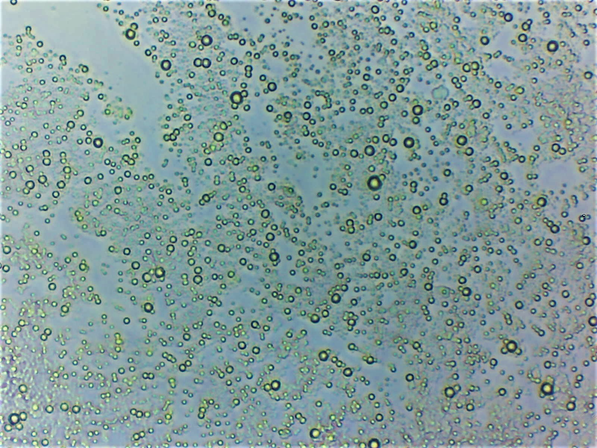
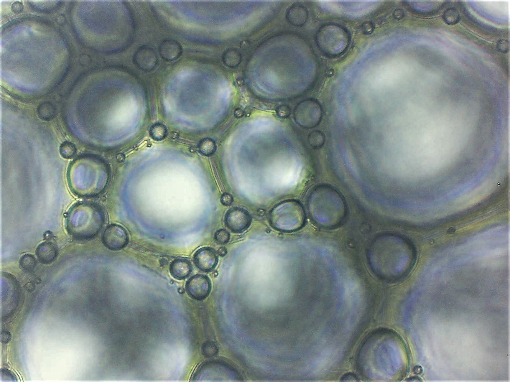
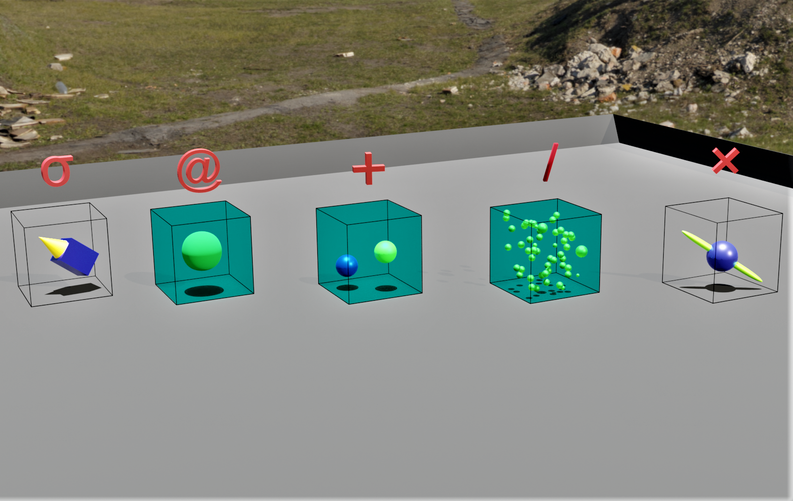

Molecules and Structures II:
Protein Story
Dr Shane V Crowley
Press down for controls and right to progress
Interacting with the Slides
📺Full screen: press the F key
🎮View video controls: hover cursor over video
👩🎨 Draw: click icon or press C
🌈Pen colour: press X to cycle and Y to revert
💁 Options and Info: click icon or press M
Video is uploading (slowly) - apologies for the delay
Before there were Molecules
Before there were Molecules
 It was possible to observe discontinuities in natureBefore there were Molecules
 These micro-scale structures are still important but scientists often look closerAncient Dietetics
The phenomena of hunger, satiation, starvation and death have ensured that the efforts of scientists to understand matter has been closely tied with the ambition to understand the "first need" body
Ancient Dietetics
- Western "dieticians" emphasised balance
- Principle was right, science was wrong
- Hippocrates had two rules of adaption on diet
The (Food) Chemistry Revolution (1740-1800)
- Berthollet (1748-1822) observes something 🥩
- What we now know as N is given a name
- This substance is not found in sugar or fat. . .
The (Food) Chemistry Revolution (1740-1800)
Magendie (1783-1855): asks a question 🐕
. . . and gets partial answers ☠️
Science and Technology
- Magendie highlighted the role of dietary N
- A new kind of cheap food was proposed
Animal Substance
- Ideas around the animal substance are a kind of essentialism
- This created certain epistemological obstacles for scientists
- The name protein gives us a clue to how these ideas were overcome
Animal Substance
- Jean Boussingault (1801-1887): nutritional quality of plants is correlated with N
- Balance of $N_{in}$ and $N_{out}$ explains growth
- Plants are the origin of N in the diet
The Only Nutrient
- Justus Liebig (1803-1873): protein is the only nutrient
- Opponents: What about sailors? What about pigs??
- Wilbur Atwater (1844-1907): calories are derived from all macronutrients
The mistake of Magendie was then repeated, this time with calories
An Argument for Low Protein
- Russel Chittenden (1856-1943): suffered from rheumatism
- Demonstrated that health could be maintained without a high-protein diet
- Opponents: "Then why do wealthy countries eat more protein?"
Critical Perspectives
Gyorgy Scrinis has argued that the fetishisation of protein, the trends of calorie-counting, the phenomenon of vitamania and more recent versions (polyphenols, fatty acids, etc.) are all examples of (variously named) nutritionism.
- Scientific progress is not linear
- Science is built on criticism and refutation
- Technology is not science
- Not all food technologies are meal-replacers
- It is difficult to argue for and against diversity
A Few Points
Next week
Food Technology
shane.crowley@ucc.ie